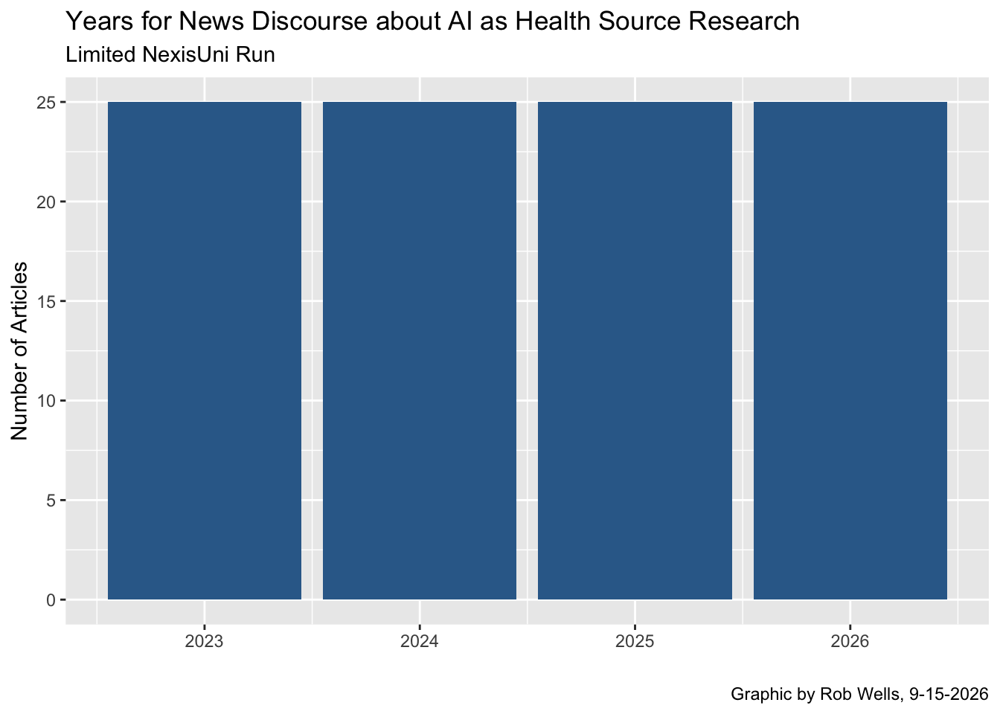

# A tibble: 60 × 12
id title date publication pub_type word_count section byline
<chr> <chr> <date> <chr> <chr> <int> <chr> <chr>
1 A001 ChatGPT may … 2023-04-28 CNN Wire News 860 <NA> By De…
2 A002 Google flexe… 2023-03-15 Axios News 1104 <NA> Jenni…
3 A003 I asked Chat… 2023-07-18 Fastcompan… News 1295 <NA> Bobbi…
4 A004 The AI Arms … 2023-02-27 Time News 2855 MACHIN… Andre…
5 A005 What Role Co… 2023-03-15 MedCity Ne… News 1137 HEALTH… Derk …
6 A006 Artificial i… 2023-05-09 CNN Wire News 999 <NA> By Al…
7 A008 Generative A… 2023-10-16 Modern Hea… News 1282 Pg. 8;… Gabri…
8 A011 The Rise of … 2023-02-27 MedCity Ne… News 1617 HEALTH… Tomer…
9 A014 ChatGPT can … 2023-03-30 The San Fr… News 878 A;Pg. … Bibi …
10 A015 AI will even… 2023-09-14 San Franci… News 938 <NA> Pedro…
# ℹ 50 more rows
# ℹ 4 more variables: company_tag <chr>, hlead <chr>, year <dbl>, length <dbl>
Create a ggplot
meta100 |>count(year) |>ggplot(aes(x = year, y = n,fill = n)) +geom_col(position ="dodge") +theme(legend.position ="none") +scale_x_continuous(breaks=c(2022:2026)) +#fixes wonky x axislabs(title ="Years for News Discourse about AI as Health Source Research",subtitle ="Limited NexisUni Run",caption ="Graphic by Rob Wells, 9-15-2026",y="Number of Articles",x="")

#I extracted evenly for each year, so group by year doesn't work for me
#Count publications
meta100 |>count(publication) |>arrange(desc(n))
# A tibble: 31 × 2
publication n
<chr> <int>
1 Healthcare Dive 9
2 Newsweek.com 8
3 CNN Wire 7
4 USNEWS.com 7
5 Inc.com 6
6 The Conversation - United States 6
7 USA Today Online 6
8 Business Insider 4
9 MedCity News 4
10 The Associated Press 4
# ℹ 21 more rows
#Visualize publications
meta100 |>count(publication) |>ggplot(aes(x = n, y =reorder(publication, n), #change the direction of bars and set the orderfill = n)) +geom_col(position ="dodge") +theme(legend.position ="none") +labs(title ="Publications for News Discourse about AI as Health Source Research",subtitle ="Limited NexisUni Run",caption ="Graphic by Rob Wells, 9-15-2026",y="Number of Articles",x="Publications")